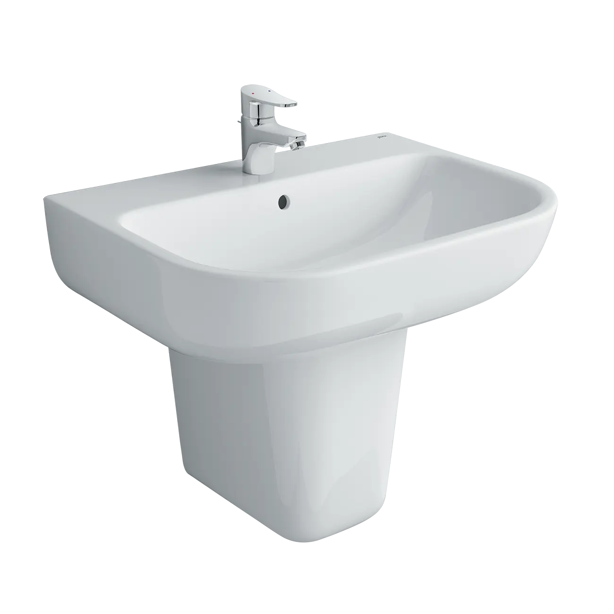
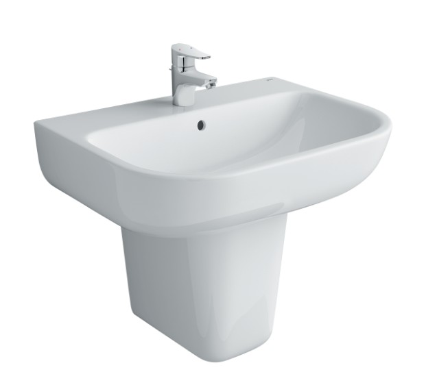
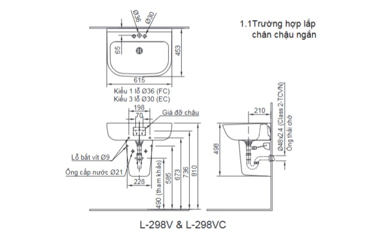

Lựa chọn Chân chậu L-298VC không chỉ là một yếu tố cấu thành về mặt kỹ thuật mà còn là điểm nhấn quyết định vẻ đẹp tinh tế và đồng bộ cho không gian phòng tắm. Khác biệt với việc lắp đặt chậu rửa riêng lẻ, chân chậu lavabo mang lại sự hài hòa, liền mạch, đồng thời giải quyết nhiều vấn đề về vệ sinh và không gian.Ưu điểm của chân chậu L-289VCVẻ đẹp đồng bộ, sang trọngChân chậu L-289VC được thiết kế để kết hợp hoàn hảo với chậu rửa treo tường, tạo thành một khối thống nhất, liền mạch. Điều này giúp che đi phần ống xả nước và các dây dẫn phức tạp, loại bỏ sự lộn xộn, mang lại cái nhìn gọn gàng, tinh tế và sang trọng hơn cho khu vực lavabo. Sự đồng bộ trong thiết kế và chất liệu men sứ cao cấp giúp nâng cao giá trị thẩm mỹ chung của phòng tắm.Tối ưu hóa không gianVới thiết kế treo tường của L-289VC, khoảng trống sàn nhà bên dưới được giải phóng hoàn toàn. Đặc điểm này đặc biệt quan trọng đối với các phòng tắm có diện tích nhỏ hoặc vừa, giúp không gian có cảm giác rộng rãi, thoáng đãng hơn. Khu vực chân chậu không bị chiếm dụng, giúp người dùng dễ dàng di chuyển và vệ sinh.Dễ dàng vệ sinh khu vực sànViệc chân chậu treo tường L-298VC không tiếp xúc trực tiếp hoặc tiếp xúc ít với sàn nhà giúp quá trình lau chùi, vệ sinh sàn nhà trở nên đơn giản, nhanh chóng hơn nhiều. Điều này giúp ngăn ngừa sự tích tụ của bụi bẩn, tóc rụng và nấm mốc ở các góc khuất, duy trì sự khô ráo, sạch sẽ tối đa cho phòng tắm.Chất liệu sứ cao cấp và bền bỉChân chậu L-298VC đều được chế tạo từ chất liệu sứ cao cấp của INAX, đảm bảo độ bền vượt trội và khả năng chống nứt vỡ dưới các tác động thông thường. Bề mặt sứ được phủ lớp men siêu mịn, giữ được vẻ sáng bóng, trắng sạch lâu dài và dễ dàng vệ sinh.Thiết kế hiện đại, dễ dàng lắp đặtChân chậu L298VC sở hữu thiết kế bo tròn tinh tế, kích thước vừa phải, phù hợp với mọi loại hình phòng tắm từ nhà ở dân dụng đến căn hộ cao cấp. Thiết kế chậu có lỗ thoát tràn an toàn và vị trí lắp vòi tiêu chuẩn. Kết cấu lắp đặt giữa chậu và chân chậu được thiết kế khớp nối hoàn hảo, đảm bảo sự vững chắc khi treo tường, chịu được áp lực và tần suất sử dụng thường xuyên.Video giới thiệu chậu rửa INAXBản vẽ lắp đặt chân chậu L-298VCXem hướng dẫn lắp đặt: https://app.box.com/s/z5wktvgvdmmhsyx5uklmic1f0r5oe2ztThông số kỹ thuậtChất liệuSứ cao cấpDạng sản phẩmChân chậu treo tườngKích thước453 x 785 x 615 (mm)Thiết kếTreo tường mang đến vẻ đẹp đồng bộ cho phòng tắmThương hiệuINAXMàu sắcTrắngKhác- Dễ dàng kết hợp với chậu rửa treo tường L-312V, AL-312V - Hotline tư vấn và bảo hành: 18006633
Chân chậu L-298VC L-298VC(chânchậu)
Chậu rửa thương hiệu INAX.
Đã cập nhật danh sách yêu thích.
DANH MỤC: Chậu rửa
MÃ SẢN PHẨM: L-298VC(chânchậu)
DEPTH: 453mm
HEIGHT: 785mm
WIDTH: 615mm
Lựa chọn Chân chậu L-298VC không chỉ là một yếu tố cấu thành về mặt kỹ thuật mà còn là điểm nhấn quyết định vẻ đẹp tinh tế và đồng bộ cho không gian phòng tắm. Khác biệt với việc lắp đặt chậu rửa riêng lẻ, chân chậu lavabo mang lại sự hài hòa, liền mạch, đồng thời giải quyết nhiều vấn đề về vệ sinh và không gian.Ưu điểm của chân chậu L-289VCVẻ đẹp đồng bộ, sang trọngChân chậu L-289VC được thiết kế để kết hợp hoàn hảo với chậu rửa treo tường, tạo thành một khối thống nhất, liền mạch. Điều này giúp che đi phần ống xả nước và các dây dẫn phức tạp, loại bỏ sự lộn xộn, mang lại cái nhìn gọn gàng, tinh tế và sang trọng hơn cho khu vực lavabo. Sự đồng bộ trong thiết kế và chất liệu men sứ cao cấp giúp nâng cao giá trị thẩm mỹ chung của phòng tắm.Tối ưu hóa không gianVới thiết kế treo tường của L-289VC, khoảng trống sàn nhà bên dưới được giải phóng hoàn toàn. Đặc điểm này đặc biệt quan trọng đối với các phòng tắm có diện tích nhỏ hoặc vừa, giúp không gian có cảm giác rộng rãi, thoáng đãng hơn. Khu vực chân chậu không bị chiếm dụng, giúp người dùng dễ dàng di chuyển và vệ sinh.Dễ dàng vệ sinh khu vực sànViệc chân chậu treo tường L-298VC không tiếp xúc trực tiếp hoặc tiếp xúc ít với sàn nhà giúp quá trình lau chùi, vệ sinh sàn nhà trở nên đơn giản, nhanh chóng hơn nhiều. Điều này giúp ngăn ngừa sự tích tụ của bụi bẩn, tóc rụng và nấm mốc ở các góc khuất, duy trì sự khô ráo, sạch sẽ tối đa cho phòng tắm.Chất liệu sứ cao cấp và bền bỉChân chậu L-298VC đều được chế tạo từ chất liệu sứ cao cấp của INAX, đảm bảo độ bền vượt trội và khả năng chống nứt vỡ dưới các tác động thông thường. Bề mặt sứ được phủ lớp men siêu mịn, giữ được vẻ sáng bóng, trắng sạch lâu dài và dễ dàng vệ sinh.Thiết kế hiện đại, dễ dàng lắp đặtChân chậu L298VC sở hữu thiết kế bo tròn tinh tế, kích thước vừa phải, phù hợp với mọi loại hình phòng tắm từ nhà ở dân dụng đến căn hộ cao cấp. Thiết kế chậu có lỗ thoát tràn an toàn và vị trí lắp vòi tiêu chuẩn. Kết cấu lắp đặt giữa chậu và chân chậu được thiết kế khớp nối hoàn hảo, đảm bảo sự vững chắc khi treo tường, chịu được áp lực và tần suất sử dụng thường xuyên.Video giới thiệu chậu rửa INAXBản vẽ lắp đặt chân chậu L-298VCXem hướng dẫn lắp đặt: https://app.box.com/s/z5wktvgvdmmhsyx5uklmic1f0r5oe2ztThông số kỹ thuậtChất liệuSứ cao cấpDạng sản phẩmChân chậu treo tườngKích thước453 x 785 x 615 (mm)Thiết kếTreo tường mang đến vẻ đẹp đồng bộ cho phòng tắmThương hiệuINAXMàu sắcTrắngKhác- Dễ dàng kết hợp với chậu rửa treo tường L-312V, AL-312V - Hotline tư vấn và bảo hành: 18006633
DANH MỤC: Chậu rửa
MÃ SẢN PHẨM: L-298VC(chânchậu)
DEPTH: 453mm
HEIGHT: 785mm
WIDTH: 615mm